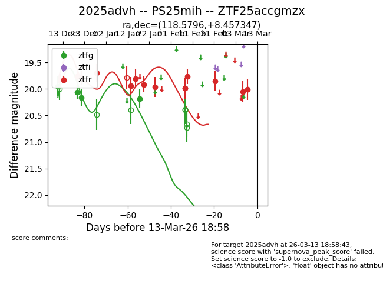
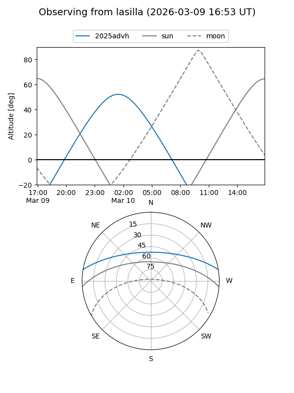
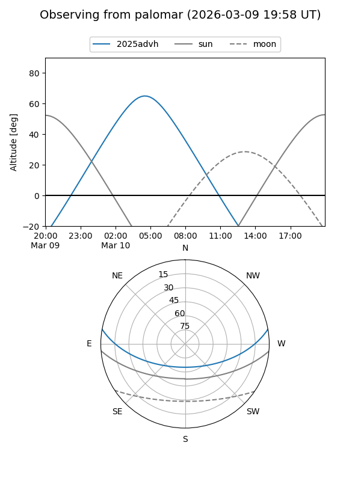
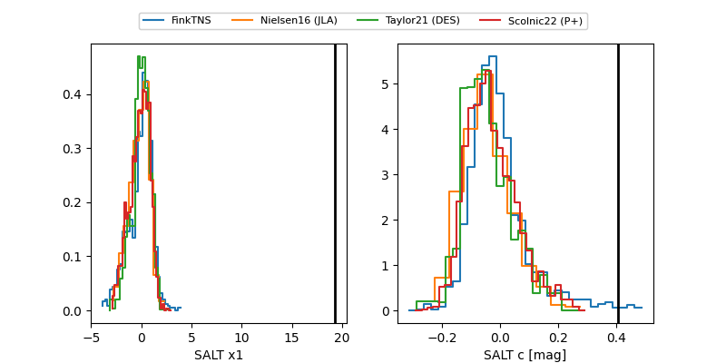

2025advh
Target 2025advh at 2025-12-20 13:09
Aliases and brokers:
FINK: fink-portal.org/ZTF25accgmzx
Lasair: lasair-ztf.lsst.ac.uk/objects/ZTF25accgmzx
ALeRCE: alerce.online/object/ZTF25accgmzx
TNS: wis-tns.org/object/2025advh
YSE: ziggy.ucolick.org/yse/transient_detail/2025advh
alt names
ZTF25accgmzx (ztf,fink_ztf)
2025advh (tns,yse)
Coordinates:
equatorial (ra, dec) = 118.5796,+8.45735
equatorial (HMS+DMS) = 07:54:19.11,+08:27:26.45
galactic (l, b) = (212.4088,+17.79264)
Flags:
Photometry:
last ztfg=20.06, ztfr=19.77
2 ztfg, 2 ztfr detections
Lightcurve

Visibility


Additional plots
